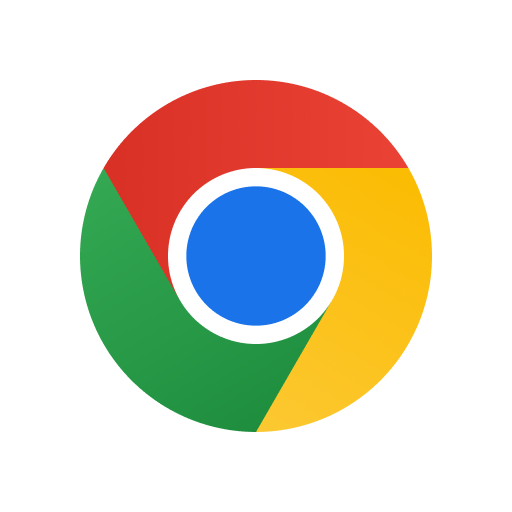

Navegadores web
Es un software o programa que permite a los usuarios acceder, visualizar e interactuar con contenido en la web, como páginas de internet, imágenes, videos y otros recursos.
| # | Navegador web | Imagen | Concepto | Caracteristicas |
|---|---|---|---|---|
| 1 | Google chrome |  | Es un navegador web de código cerrado desarrollado por Google, aunque derivado de proyectos de código abierto (como el motor de renderizado Blink) | Seguridad, Velocidad, Productividad, Compatibilidad, Simplicidad, Administrador de tareas. | 2 | Mozilla firefox |  |
s un navegador y software de código abierto gratuito que se caracteriza por un gran número de posibles personalizaciones y ajustes. | Alto nivel de seguridad, Compatibilidad con google, Opciones de personalización, Compatibilidad con diferentes dispositivos. | 3 | Microsoft edge | Es un navegador web desarrollado por la compañía norteamericana Microsoft en sustitución de su antiguo navegador Internet Explorer. | Integración con Windows, Buen rendimiento, Funciones de seguridad avanzadas. |
Navegador mas utilizado
Google chrome
El navegador web más utilizado a nivel global es Google Chrome. Desde hace varios años, Chrome ha mantenido una gran ventaja en términos de cuota de mercado.
PáginaCiclos de actualización rápida
Microsoft Edge
Un ciclo de actualizaciones similar al de Chrome, ya que se basa en el motor Chromium. Las versiones nuevas se lanzan aproximadamente cada 4 semanas.
PáginaMayor seguridad
Mozilla Firefox
Firefox tiene un fuerte enfoque en la privacidad, es ideal si además te importa la privacidad, con un enfoque sólido en el bloqueo de rastreadores y un código abierto.
Página